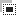

To access these tools, select → from the main menu.
Ferramentas de seleção são projetadas para selecionar as regiões da camada ativa para que você possa trabalhar com elas sem afetar as áreas não selecionadas. Cada ferramenta tem suas próprias propriedades individuais, mas as ferramentas de seleção também compartilham uma série de opções e características em comum. Essas características comuns são descritas aqui, as variações são explicadas nas seções seguintes para cada ferramenta especificamente. Se precisar de ajuda sobre o que é uma “seleção” no GIMP, e como ela funciona, consulte Seleção.
This category includes the following tools:
Em alguns aspectos, a ferramenta de Vetor também pode ser pensada como uma ferramenta de seleção: qualquer caminho fechado pode ser convertido numa seleção. Ele também pode fazer muito mais, porém, não compartilha o mesmo conjunto de opções que as outras ferramentas de seleção.
O comportamento das ferramentas de seleção é modificado se você mantém pressionada a tecla Ctrl, Shift, e/ou Alt enquanto você usá-las.
![[Nota]](images/note.png)
|
Nota |
|---|---|
|
Os usuários avançados acham as teclas modificadoras muito valiosas, mas os usuários novatos, muitas vezes acham-nas confusas. Felizmente, é possível para a maioria dos propósitos utilizar os botões de Modo (descritos abaixo), em vez de teclas modificadoras. |
- Ctrl
-
Ao criar uma seleção, mantendo pressionado Ctrl podem ter duas ações diferentes de acordo com a maneira de usá-lo:
-
Mantendo pressionada a tecla enquanto desenha a seleção liga a opção “Expandir a partir do centro”.
-
Se você segurar a tecla Ctrl antes de desenhar uma seleção, esta nova seleção muda para o modo Subtrair. Assim, esta nova seleção será subtraída de uma já existente, assim que você solta o botão, na medida em que elas têm pixels em comum.
-
- Alt
-
Segurar Alt pressionado vai permitir o movimento da seleção atual (apenas a sua estrutura, não o seu conteúdo). Se toda a janela de imagem for movida em vez de apenas a seleção, tente Shift+Alt. Note que a tecla Alt às vezes é interceptada pelo sistema de janelas (o que significa que GIMP nunca sabe que foi pressionada), então isso pode não funcionar para todos.
- Shift
-
Ao criar uma seleção, manter pressionada a tecla Shift pode ter duas ações diferentes de acordo com a maneira de usá-la:
-
Se você mantiver pressionada a tecla antes de clicar para iniciar a seleção, esta seleção será feita em modo de Adição, enquanto você pressionar a tecla.
-
Se você mantiver pressionada a tecla Shift após clicar para iniciar a seleção, o efeito dependerá da ferramenta que você estiver usando: por exemplo, a seleção será um quadrado com a ferramenta de Seleção Retangular.
-
- Ctrl+Shift
-
Usando Ctrl+Shift juntos podem fazer uma variedade de coisas, dependendo de qual ferramenta é usada. Comum a todas as ferramentas de seleção é que o modo de seleção será comutado para cruzamento, de modo que após a operação ser concluída, a seleção consistirá na intersecção da região traçada com a seleção pré-existente. É um exercício para o leitor a jogar com as várias combinações disponíveis ao realizar seleções, mantendo Ctrl+Shift e liberando ou um ou ambos antes de soltar o botão do mouse.
- Teclas modificadoras para mover seleções
-
Ctrl+Alt+ e Shift+Alt+ são usados para mover seleções. Veja Seção 2.1, “Movendo uma seleção”.
- Barra de espaço
-
Ao pressionar a Barra de espaço enquanto você estiver usando uma ferramenta (de seleção ou qualquer outra) transforma esta ferramenta numa cruz de navegação enquanto você pressionar a barra, o que lhe permite deslocar a visualização da imagem em vez de usar as barras de rolagem quando a imagem for maior do que a tela. Esta é a opção padrão: em Preferências / Janelas de Imagem, você pode configurar a barra de espaço para acionar a ferramenta de Mover temporariamente. )
Aqui nós descrevemos as opções de ferramentas que se aplicam a todas as ferramentas de seleção: opções que se aplicam apenas a algumas ferramentas, ou que afetam cada ferramenta de maneira diferente, são descritas nas seções dedicadas às ferramentas individuais. As configurações atuais para estas opções podem ser vistas na caixa de diálogo Opções da ferramenta, que você deve ter sempre visível quando você estiver usando ferramentas. Para tornar a interface consistente, as mesmas opções são apresentadas para todas as ferramentas de seleção, mesmo que algumas delas não tenham qualquer efeito para algumas das ferramentas.
- Modo
-
Isso determina a forma como a seleção que você cria é combinada com qualquer seleção pré-existente. Note que as funções desempenhadas por estes botões podem ser duplicadas usando teclas modificadoras, como descrito acima. A maior parte, dos usuários avançados usam as teclas modificadoras; para usuários novatos, em geral usar os botões é o modo mais fácil.
-
 Replace
Replace
-
Modo Substituir irá destruir ou substituir qualquer seleção existente quando a nova seleção for criada.
-
 Add
Add
-
Modo Adicionar fará com que a nova seleção seja adicionada a quaisquer regiões de seleção existentes.
-
 Subtract
Subtract
-
Modo Subtrair irá remover a nova área de seleção de quaisquer regiões de seleção existentes.
-

Intersect -
Modo Interseção fará uma nova seleção da área onde a região de seleção existente e a nova região de seleção se sobreponham.
-
- Anti-serrilhamento
-
Esta opção afeta apenas algumas ferramentas de seleção: ela faz com que o limite da seleção seja desenhado de forma mais suave.
- Enevoar bordas
-
Esta opção permite que o limite da seleção seja desfocado, de modo que os pontos perto da fronteira fiquem apenas parcialmente selecionados. Para mais informações sobre enevoar, consulte o glossário Enevoando.
When this option is checked, a Radius option appears. Default value is 10 pixels: higher image resolution, higher radius.